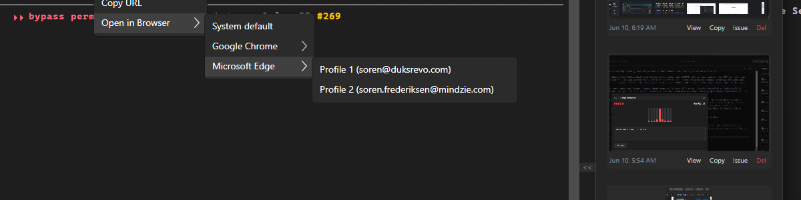
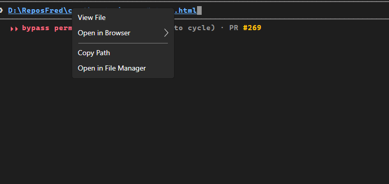
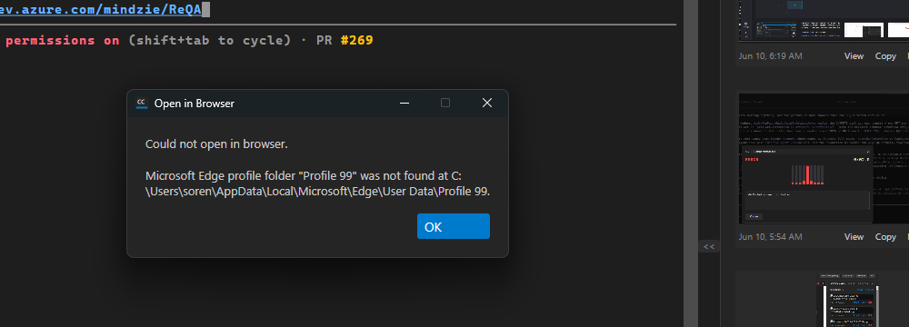

Fresh scripts\local-build-avalonia.ps1 -Slot 5 from PR HEAD, launched via the cc-director-launch task. A session with a parked URL (and a second with a parked local .html path) was driven with synthetic input; each result judged from the screenshot and the Director log - not from the developer's proof.
| AC | Result | Evidence |
|---|---|---|
| 1 - Submenu lists browsers + real profiles | PASS | System default / Google Chrome / Microsoft Edge; Edge -> Profile 1 (duksrevo) + Profile 2 (mindzie) by name+account (round 1 also confirmed Chrome's 7 profiles, account-first sort). ac1-menu.png |
| 2 - Choosing browser+profile opens that profile | PASS | Clicking Edge -> "Profile 2 (mindzie)" leaf logged OpenInBrowserProfile -> OpenWithProfile profile=Profile 1 (pid 53216) and saved config.json browser.default = Profile 1. This is the exact click that failed in round 1. |
| 3 - Sticky default | PASS | After the selection, a plain parent-click logged OpenInBrowserDefault: opened ... in Microsoft Edge/Profile 1; the default persists in config.json (read fresh each click). |
| 4 - Works for URLs and local HTML | PASS | A local .html link shows the same "Open in Browser" submenu (ac4-html-menu.png); launching it logged OpenWithProfile ... target=D:\ReposFred\cc-director\qa-ac4-test.html ... Microsoft Edge/Profile 1. |
| 5 - No silent fallback on missing target | PASS | With the default set to a bogus folder, a parent-click showed a clear error dialog "Microsoft Edge profile folder \"Profile 99\" was not found at ...\Profile 99" and did NOT open the system default. ac5-error.png |
[BrowserLauncher] OpenWithProfile: browser=Microsoft Edge, profile=Profile 1, target=https://dev.azure.com/mindzie/ReQA (AC2 leaf) [BrowserDefaultStore] Save: ... profile=Profile 1 (AC2/AC3 sticky) [TerminalControl] OpenInBrowserProfile: opened ... in Microsoft Edge/Profile 1 (AC2 leaf handler) [TerminalControl] OpenInBrowserDefault: opened ... in Microsoft Edge/Profile 1 (AC3 parent reopen) [BrowserLauncher] OpenWithProfile: ... target=D:\ReposFred\cc-director\qa-ac4-test.html ... Microsoft Edge/Profile 1 (AC4 html)



The round-1 defect is fixed (the same Profile-2 leaf click now selects the profile). No adjacent breakage observed. CenCon: no architecture/security drift (local browser launch with validated argument arrays, consistent with DT-02/DT-03; reads a user-readable JSON file). 10 Core unit tests for the parsing/launch logic remain green; the fix was UI-only in TerminalControl.